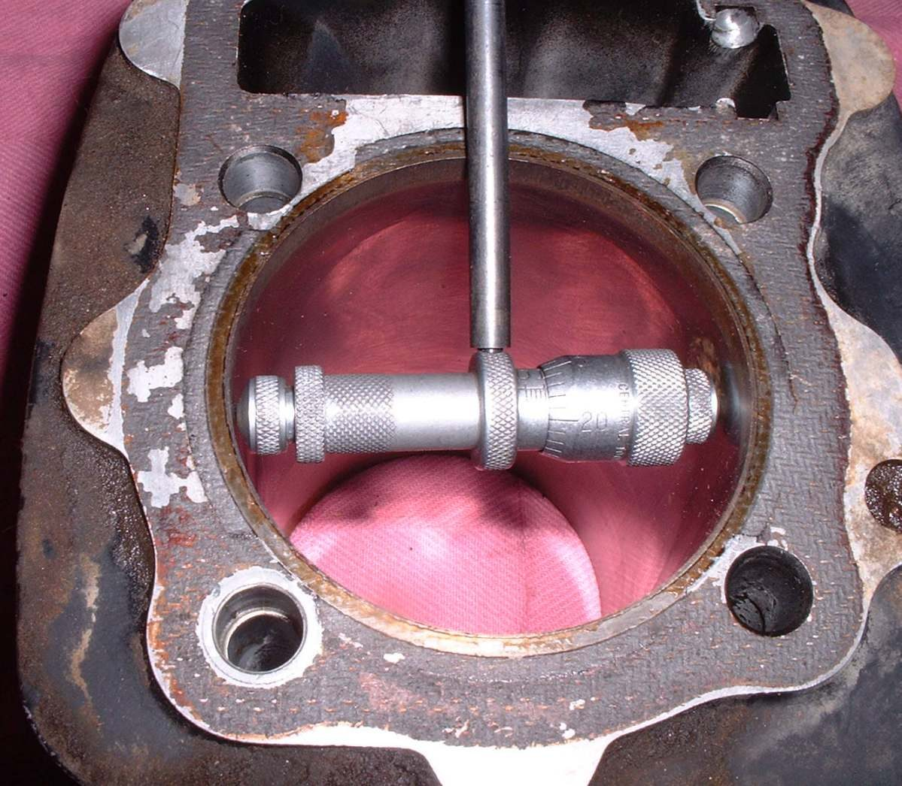
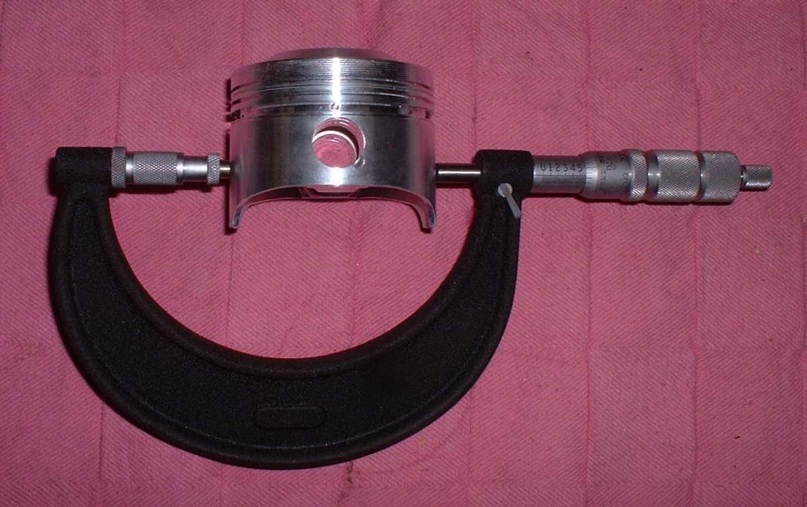
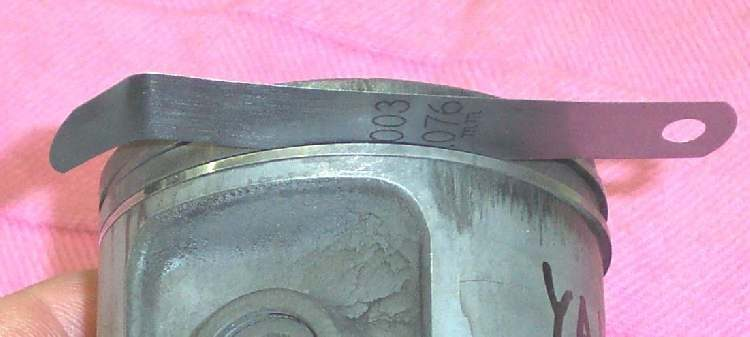

The piston must fit the cylinder with a small, exact gap. Too tight and it seizes. Too loose and it slaps, burns oil and leaks compression. New rings alone do not cure a worn bore. This measurement tells whether the cylinder can be honed and fitted with new rings, or must be bored for an oversize piston. It needs precise tools and a manual with the limits for your engine.
Safety
- Cylinder and piston are sharp at the ports and ring grooves. Wear gloves when handling.
- Cover the crankcase opening with a clean rag while the cylinder is off, so nothing falls in.
- Do not use acid, solvent or a hone near open flame or on skin. See the note on smeared aluminium below.
You need
- An outside micrometer for the piston and a bore gauge or inside micrometer for the cylinder.
- The piston clearance, wear limit and oversize steps for your engine. Use the value in your bike's manual. For an aftermarket piston use the maker's figure.
- A clean surface and a rag.
Steps
- With the head off and the piston at the top of its travel, rock the piston side to side in the bore. There should be almost no movement. Obvious rocking means the bore is worn.
- Feel for a ridge at the top of the bore, just below where the top ring stops. A ridge you can feel with a fingernail, together with side movement, means the cylinder needs boring.
- Remove the piston. Measure its diameter across the skirt at the point and height the manual gives. As a general rule this is a short distance up from the bottom of the skirt and across the thrust faces.
- Measure the bore at three heights (top, middle, bottom) and at two directions at right angles (front to back and side to side). The most wear is normally at the top and on the front and back faces. The least is at the bottom.
- Clearance is the largest bore reading minus the piston diameter. Compare with the manual.
- Compare taper (top reading minus bottom reading) and out-of-round (difference between the two directions at one height) with the manual's limits.
- Decide: - Clearance, taper and out-of-round all within limits: deglaze the bore (see Fit piston rings) and fit new rings. - Any measure over limit: the cylinder must be bored to the next oversize and fitted with the matching piston and rings. Get the piston first and measure it, then have the machinist bore to suit.
- Look for rust pits in the bore, usually where the rings stop. Pits mean the cylinder needs boring deeper than normal.
- Check plated cylinders (hard coating instead of an iron liner). Wear that exposes the base metal means a replating or a new sleeve. Do not hone a plated bore more than a light finish pass, and use the stones the maker names.
- If aluminium has smeared on the bore from a seizure, it must be removed before measuring. Do this with the means named in the manual, or have a machine shop do it. Acids that dissolve aluminium are dangerous to skin and eyes. Wear full protection and neutralise spills with water and bicarbonate.
- If a replacement piston is hard to find, a piston from another model with the same pin size can sometimes be fitted by machining, but this is a workshop job with risk to the engine.
Check your work
- All readings written down with the part and position.
- A decision recorded: hone and rings, or bore and oversize piston.
- If the oversize is printed on the piston with ink, confirm it by measuring. Ink wears off.
If it did not fix the problem
- Piston skirt or bore shows scoring or burnt, blued metal: the cylinder was overheated. Smoke may continue after a rebuild. See Engine still smokes after a rebuild.
- On a two-stroke with chewed marks on the piston crown: the bottom end may be breaking up. Assess bottom end and internal engine damage.
- General top end check: Assess the top end (cylinder, piston, valves).